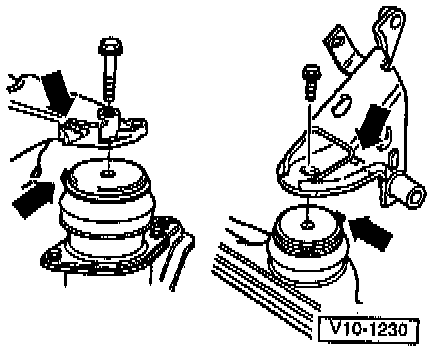
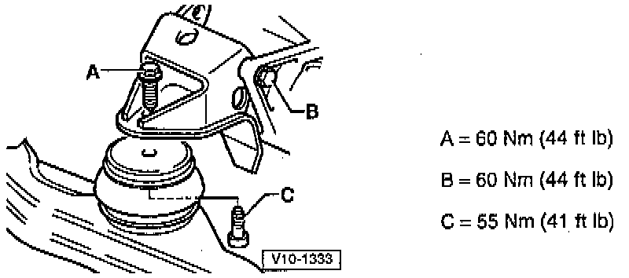

Installation
Installation is carried out in the reverse order of removal, noting the following:1. On models with manual transmission:
a. Check clutch release bearing for wear, replace if necessary.
b. Lightly grease clutch release bearing, release bearing guide sleeve and splines on transmission input shaft with grease Part No. G 000 100, or equivalent.
2. On all models, check whether the dowel sleeves for centering engine and transmission are in the cylinder block, install if necessary, tighten engine to transmission bolts as follows:
- 10 mm: 60 Nm (44 ft. lbs.).
- 12 mm: 80 Nm (59 ft. lbs.).
3. When lowering engine/transmission assembly into position, make sure that clearance exists between assembly and axle shafts.

4. When installing right rear and front engine/transmission mounts, make sure that recesses on brackets (upper arrows) engage lugs on bonded rubber mounts (lower arrows).
5. Install all engine/transmission assembly mounting bolts by hand and thread in approx. 5-6 turns.
6. Align and relieve stress on mounts by rocking engine/transmission assembly.
Front Engine Mount:

Right Rear Engine Mount:

7. Tighten front and right rear mounts as shown in the illustration.
Left Rear Engine Mount:

8. Tighten left rear mount as shown in the illustration.
9. On models with manual transmission, proceed as follows:
a. Install hydraulic clutch slave cylinder.
b. Install selector cables with support bracket on transmission, adjust if necessary.
10. On models with automatic transmission, install selector lever cable on transmission, adjust if necessary.
11. On models with A/C, install air conditioner compressor
12. On all models, install power steering pump.
13. Install lock carrier with attachments.
14. Install Intake Air duct.
15. Install poly-ribbed belt.
16. Fill engine cooling system.
17. Adjust Accelerator Pedal cable.
18. Check Diagnostic Trouble Code (DTC) Memory.
19. Check idle speed and ignition timing.
20. Check headlight aiming and adjust if necessary.
21. Tighten fasteners as follows:
- Axle shafts to drive flanges: 45 Nm (33 ft. lbs.).
- Front exhaust pipe to exhaust manifold: 40 Nm (30 ft. lbs.).
- Front exhaust pipe to Three Way Catalytic Converter (TWC): 25 Nm (18 ft. lbs.).
- Engine carrier to body: 80 Nm (59 ft. lbs.).